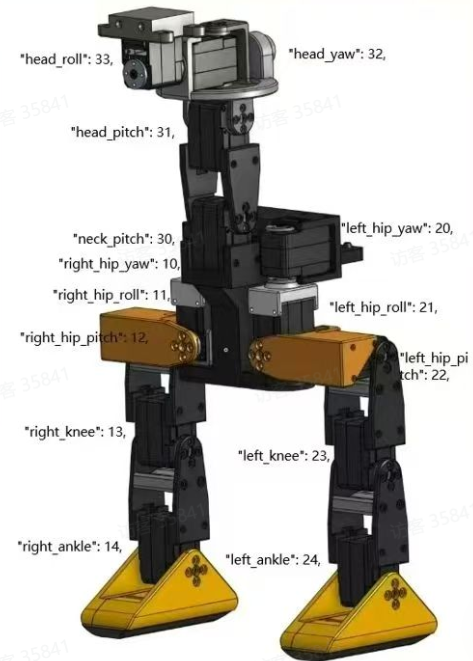

<!DOCTYPE lake>
<p data-lake-id="u073f7186" id="u073f7186"><span data-lake-id="ua35bcd7a" id="ua35bcd7a">所有的电机先做一下中位校准</span></p><p data-lake-id="ud711749a" id="ud711749a"><span data-lake-id="u34c03364" id="u34c03364">​</span><br/></p><p data-lake-id="ufc79a1d7" id="ufc79a1d7"><span data-lake-id="u0290fa4d" id="u0290fa4d">执行下面的代码，根据代码提示，校准每一个关节</span></p><span class="yuque-card-unsupported">[codeblock]</span><p data-lake-id="u1189e030" id="u1189e030"><span data-lake-id="ueea3aa4e" id="ueea3aa4e">这一个步骤非常关键，校准不准确的话，就容易导致机器人无法行走</span></p><p data-lake-id="u67fd4ae3" id="u67fd4ae3"><span data-lake-id="u086f3475" id="u086f3475">​</span><br/></p><p data-lake-id="u8aad8af1" id="u8aad8af1"><span data-lake-id="u606c931a" id="u606c931a">根据提示，我们让鸭子的每一个关键都进入到如下图所示的状态</span></p><p data-lake-id="u926c87b1" id="u926c87b1"></p><p data-lake-id="ue9fc3060" id="ue9fc3060"><span data-lake-id="u4c4b2051" id="u4c4b2051">最终它会输出偏移量，我们将偏移量写到配置的json文件中</span></p><p data-lake-id="ufe42b535" id="ufe42b535"><span data-lake-id="u456f3bcb" id="u456f3bcb">​</span><br/></p><h2 data-lake-id="iDmpi" id="iDmpi"><span data-lake-id="u48621f66" id="u48621f66">最终要求</span></h2><ol list="uc70cced5"><li data-lake-id="u98080816" fid="u81c7e02a" id="u98080816"><span data-lake-id="u3d4b36e9" id="u3d4b36e9">放在地上，左右腿同时触发足底开关</span></li><li data-lake-id="ued7afb1b" fid="u81c7e02a" id="ued7afb1b"><span data-lake-id="u6c1b461a" id="u6c1b461a">从侧面看，左右腿是在同一个平面上</span></li><li data-lake-id="u8be3b45b" fid="u81c7e02a" id="u8be3b45b"><span data-lake-id="u2bd31631" id="u2bd31631">肚子水平，或者略微朝上</span></li><li data-lake-id="u90753b1a" fid="u81c7e02a" id="u90753b1a"><span data-lake-id="ud99ed50a" id="ud99ed50a">头部水平，或者略微朝上</span></li></ol>